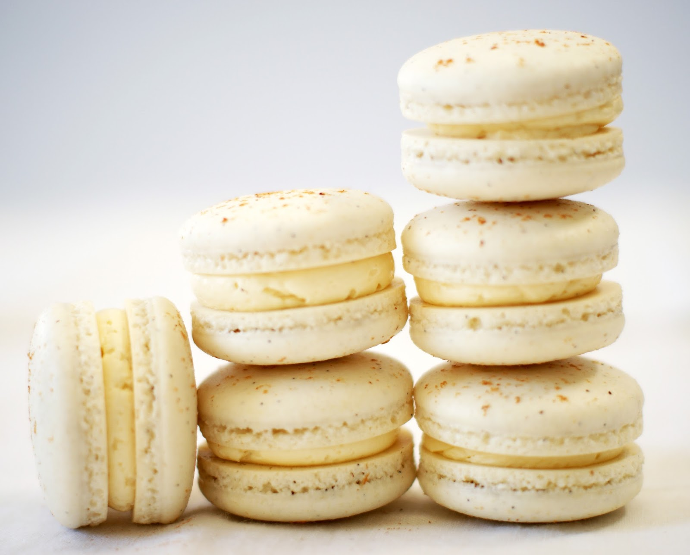

BakeHub
Danielle's Favorite Baking Recipes
The French Macaron

Click the image of the macarons to discover the history of these delicate sandwich cookies!
The French Macaron is one of the most difficult confections to bake. Don't feel discouraged if your macarons are an utter disaster on your first few attempts!
Difficulty: Hard
- 1 cup of powdered sugar
- 0.75 cup of almond flour
- 2 large egg whites at room temperature
- 2.5 tablespoons of granulated sugar
- Preheat the oven to 300℉. *See the table of recommended baking temperatures and times down below*
- Sift the powdered sugar and almond flour into a bowl together.
- Using an electric mixer, beat the egg whites on low speed until airy and foamy.
- While increasing the speed of the mixer, add in the granulated sugar until soft peaks form. Turn the mixer up to high speed and whisk until stiff peaks form.
- This step is called the macaronage: incorporating the dry ingredients with the egg whites to form the macaron batter. During the macaronage process, always remember the magic number 50. You should mix about 50 times to have the correct consistency of batter. Too much mixing, and your macarons will be deflated. Too little mixing, and your macarons will be misshapen and cracked. Keeping this in mind, in thirds, add the egg white mixture into the dry mixture and fold until fully incorporated.
- Carefully transfer the macaron batter into a piping bag.
- Take out a flat baking sheet and line it with parchment paper or a SILPAT Baking Mat.
- Pipe the batter into 3/4 inch rounds on the baking tray. Be sure to space the rounds about an inch apart from each other so they don't touch.
- Once you have finished piping, tap the baking sheet onto the table to release the trapped air from the macaron batter rounds.
- This is one of the most important steps in the process. Allow the tray with the macaron batter rounds to sit at room temperature for at least 45 minutes. This will allow your macarons to develop a skin, which is crucial to have a great macaron.
- Bake the sheet of macarons in the oven for about 15 minutes, rotating the baking sheet halfway through. Once the macarons have just become crisp and firm, (you can test this by gently pushing the macaron to see if it is attached to its feet), immediately take them out of the oven.
- Let the macarons cool on the sheet for a few minutes. Then carefully peel them off the parchment paper/SILPAT mat.
- Once the macarons are fully cooled, fill them with ganache, buttercream, jam, etc. I would recommend these two macaron fillings: Chocolate Ganache Macaron Filling or Vanilla Buttercream Macaron Filling.
Table of Recommended Temperatures and Times for Baking Macarons
| Temperature |
Time |
| 275℉ |
17-20 minutes |
| 300℉ |
14-17 minutes |
| 325℉ |
12-14 minutes |
| 350℉ |
10-12 minutes |
Recipe adapted from Honeysuckle